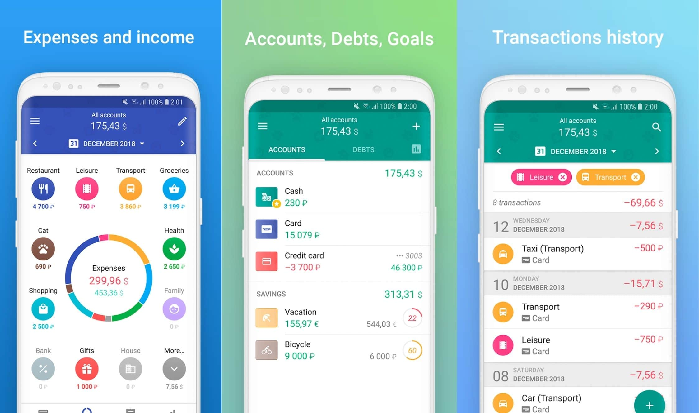
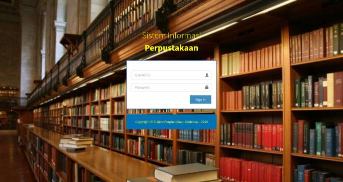
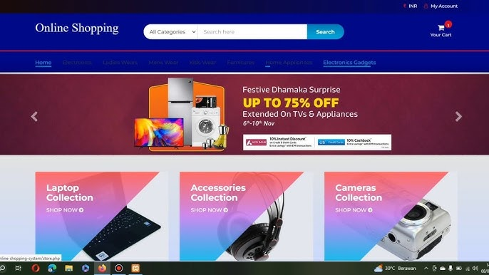

Proyek Alumni
Berikut adalah kumpulan proyek yang telah dibuat oleh mahasiswa dan alumni AMIK YPAT Purwakarta:

Aplikasi Keuangan
Pengembang: Amril Aziz
Deskripsi: Aplikasi manajemen keuangan untuk usaha kecil.

Sistem Informasi Perpustakaan
Pengembang: Ahmad Sanusi
Deskripsi: Sistem yang membantu manajemen buku dan peminjaman.

Website E-Commerce
Pengembang: Rizky Septian
Deskripsi: Platform belanja online untuk produk lokal.